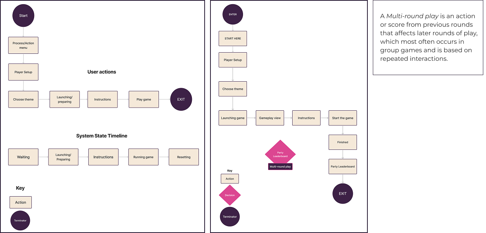
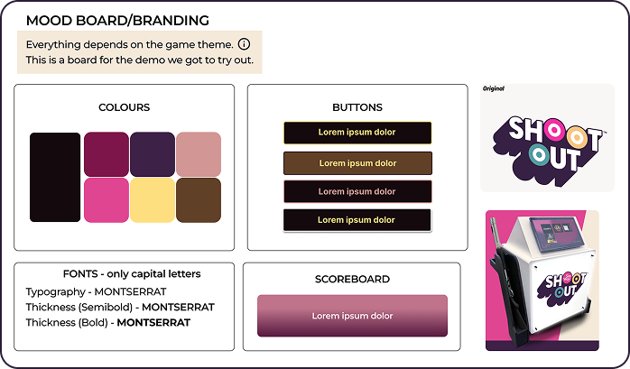
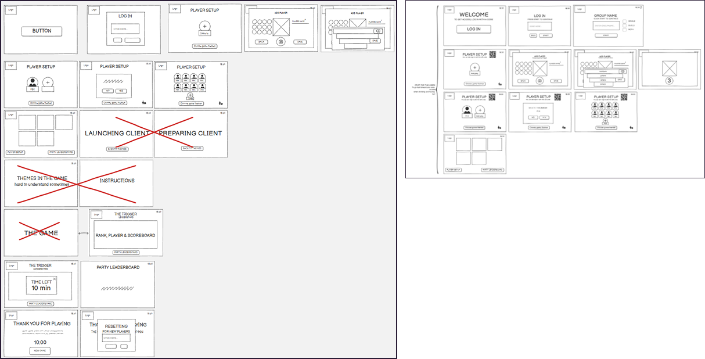
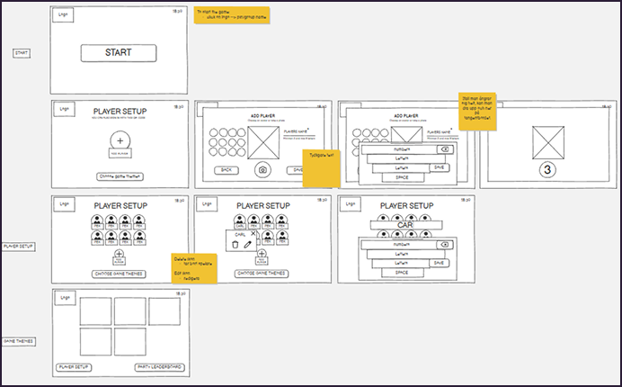
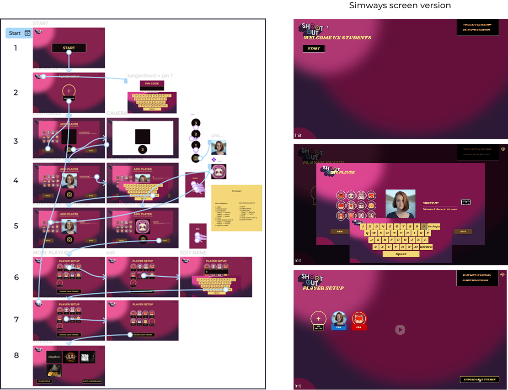
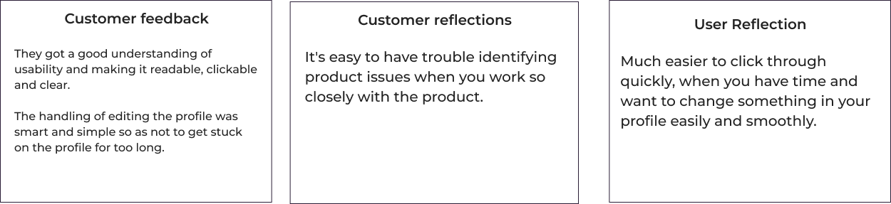

SIMWAY
Social Gaming
Simulator game offering two ready-made concepts for bars and entertainment venues
Background
Together with Simway we have had the opportunity to work with, Shoutout. Simway was founded in 2006 with a focus primarily on hunting training which later became an entertainment and activity segment. With inspiration from the UK's bars and activity venues, combined drinks and social gaming experiences.
The goal was to examine their screen that users interact with first, before the game can start. With clear and intuitive menus, so users always know what the next step in the process is, without getting stuck.
Goals
- Understand how users experience their navigation.
- Make the flow more intuitive and self-directed.
- Provice an experience that makes end customers want to come back.
- An improvement to how end users navigate trough menu modes.
Challenges
Many of their customers were in Stockholm or the UK where they started. Therefore, the user testing was a bit challenging and we had to bring friends, family and relatives to check out the demo. They didn't have any data that was written, but we had to go a lot on the research that was done.
The design process
The design processes were followed by a lot of individual work, where I had to tought myself developed research and your own initiatives for the work. Here I developed different user flows and mood boards. To make sure that I followed their frameworks and guidelines. There was a lot that needed to be reviewed and understood in their user flow, which I divided into different categories. It took many iterations before I started to approach a more understandable flow. I also got access to a lot of data and a demo that I shared with the rest of the group. Where you yourself could do your own user tests and try it out on users.


Results
Low-fiedlity-prototyp
I started with some simple sketches in Balsamiq where I tried to understand how their flow worked. I explored what could be possible and how I could improve the experience in certain parts of the system.
This gave me an overview of how their system worked. I chose not to show my low-fidelity prototype to the client because it was a low-detailed wireframe that did not communicate clearly enough.
During the meetings, I noticed that the client needed more developed wireframes to be able to understand the proposals better. Therefore, I started a more detailed mid-fidelity prototype in the next step.

Mid-fiedlity-prototyp
I took feedback and the changes that emerged with me, which led to a more developed final result for each step in the process - from start to game.
Here the focus was on form, layouts, text placement and wording on the flow structures.
I also needed to rethink how the information for editing would be presented and how QR codes could be used in the work. The function was initially a requirement, but was later removed because the customer chose not to proceed with it. Took into account the technical limitations we were given and spent a lot of time developing the flow structure and interactions.

High-fidelity-prototyp
I delved deeper into guidelines around colors, shapes, and components to mimic Simway's own visual style. Throughout the flow, I worked to create a more intuitive path for users.
My first thought was to redesign the entire visual appearance. However, I chose not to do so, as it could risk breaking their structure that they were already working with. Instead, I focused on improving their existing design framework.
One of my design suggestions was to make the buttons larger. Their system is used in a busy environment where the user should be able to quickly press clear and easily identifiable buttons to move forward in the flow.
I drew inspiration from established principles in usability heuristics and UI patterns to create a foundation for what design decisions were needed and why. Relevant heuristics were consistency and standard & aesthetic and minimalist design. Among the UI Patterns I used, among others, simulation, trigger and limited-duration, which were used to support clear feedback and guidance in the user flow.

Reflections & feedback
- Understand their aspects of technical and policy principles.
- Ask deep and concrete questions to customers and stakeholders.
- Contrasts and usability.
- Independence and fast interactions
- Understand usability heuristics & UI patterns within the work.
Feedback from customer & users
